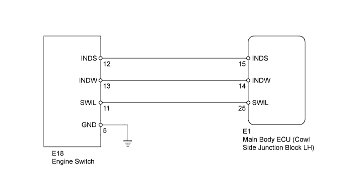
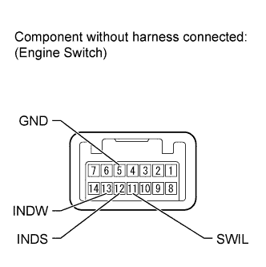
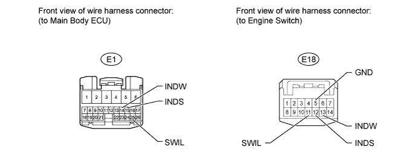

ENTRY AND START SYSTEM (for Start Function) > Engine Switch Indicator Circuit |
| Power Source Mode/Condition | Indicator Light Condition | ||
| Brake pedal released (for A/T) Clutch pedal released (for M/T) | Brake pedal depressed, shift lever in P or N (for A/T) | Clutch pedal depressed (for M/T) | |
| Off | Off | Illuminates (Green) | Illuminates (Green) |
| On (ACC, IG) | Illuminates (Amber) | Illuminates (Green) | Illuminates (Green) |
| Engine running | Off | Off | Off |
| Steering lock not unlocked | Flashes (Green) for 30 sec. | Flashes (Green) for 30 sec. | Flashes (Green) for 30 sec. |
| System malfunction | Flashes (Amber) for 15 sec. | Flashes (Amber) for 15 sec. | Flashes (Amber) for 15 sec. |
| Clutch start switch malfunction (for M/T) | Flashes (Green) for 15 sec. | Flashes (Green) for 15 sec. | Flashes (Green) for 15 sec. |

| 1.INSPECT ENGINE SWITCH |
 |
Disconnect the E18 engine switch connector.
Apply battery voltage between the terminals of the engine switch, and check the illumination condition of the engine switch indicator light.
| Measurement Condition | Condition | Specified Condition |
| Battery terminal (+) → Terminal 11 (SWIL) - Battery terminal (-) → Terminal 5 (GND) | Battery voltage is applied to the terminals | Illuminates |
| Battery terminal (+) → Terminal 12 (INDS) - Battery terminal (-) → Terminal 5 (GND) | ||
| Battery terminal (+) → Terminal 13 (INDW) - Battery terminal (-) → Terminal 5 (GND) |
| Result | Proceed to |
| Illuminates | A |
| Does not illuminate (for 1GR-FE) | B |
| Does not illuminate (for 2UZ-FE) | C |
| Does not illuminate (for 1VD-FTV) | D |
|
| ||||
|
| ||||
|
| ||||
| A | |
| 2.CHECK HARNESS AND CONNECTOR (MAIN BODY ECU - ENGINE SWITCH AND BODY GROUND) |

Disconnect the E1 main body ECU connector.
Disconnect the E18 engine switch connector.
Measure the resistance according to the value(s) in the table below.
| Tester Connection | Condition | Specified Condition |
| E1-25 (SWIL) - E18-11 (SWIL) | Always | Below 1 Ω |
| E1-15 (INDS) - E18-12 (INDS) | Always | Below 1 Ω |
| E1-14 (INDW) - E18-13 (INDW) | Always | Below 1 Ω |
| E18-5 (GND) - Body ground | Always | Below 1 Ω |
| E1-25 (SWIL) or E18-11 (SWIL) - Body ground | Always | 10 kΩ or higher |
| E1-15 (INDS) or E18-12 (INDS) - Body ground | Always | 10 kΩ or higher |
| E1-14 (INDW) or E18-13 (INDW) - Body ground | Always | 10 kΩ or higher |
|
| ||||
| OK | ||
| ||